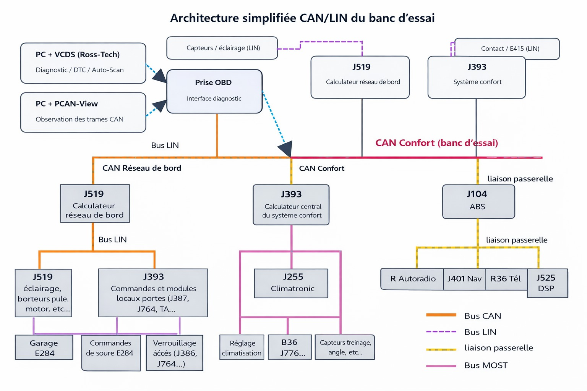
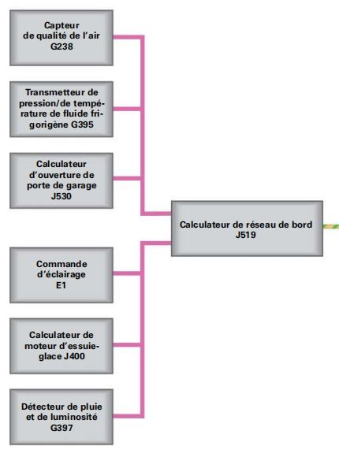
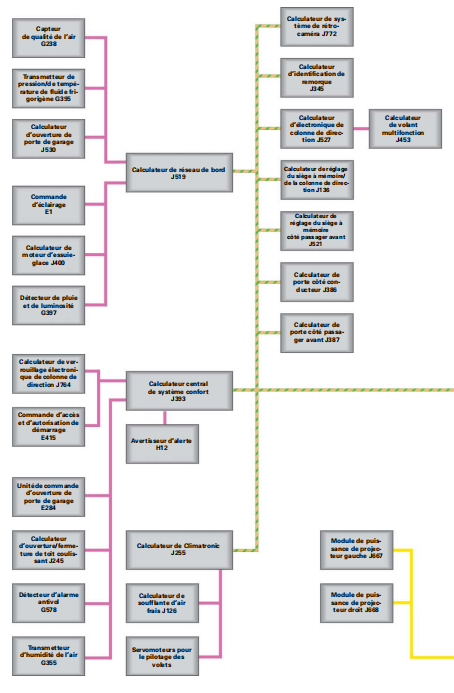
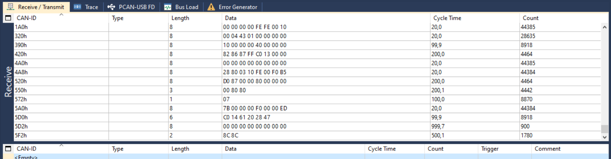
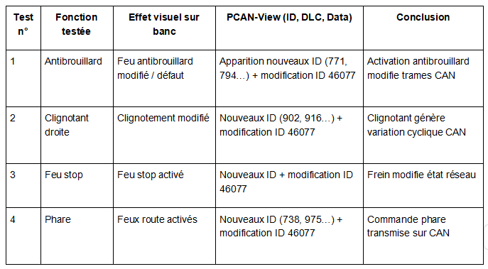

Documentation technique – Banc d’essai BUS CAN / LIN
Objectif : présenter l’architecture du banc (réseau habitacle Audi), les outils utilisés et une synthèse des observations réalisées (VCDS + PCAN-View).
|
1. Architecture globale (CAN/LIN)
1.1 Description générale du banc
Le banc Leybold « Training Panel Lighting » reproduit une partie du réseau électronique du domaine habitacle (confort) d’un véhicule Audi.
Il intègre un réseau CAN, des liaisons LIN, un système d’éclairage et une prise de diagnostic OBD pour les opérations de test et d’observation.
[S1]
Les principaux calculateurs étudiés sur la maquette sont : J519 (réseau de bord), J393 (confort), J527 (colonne de direction),
J285 (combiné d’instruments) et J345 (remorque, selon configuration). L’alimentation du banc est réalisée en 12/14 V
(masse et + permanent). [S2]
ECU principaux (vue d’ensemble)
- J519 : calculateur réseau de bord (fonctions d’éclairage / passerelles locales, et sous-systèmes LIN).
- J393 : calculateur central de confort (fonctions habitacle et échanges sur CAN Confort).
- J527 : électronique de colonne (commandes conducteur).
- J285 : combiné d’instruments (affichage des états du véhicule).
- J345 : identification remorque (présence selon configuration).
|
1.2 Réseaux CAN et LIN : principes
Un véhicule moderne n’utilise pas un seul bus : on distingue généralement plusieurs sous-réseaux CAN spécialisés (propulsion, confort, diagnostic),
et des bus locaux comme le LIN. Le CAN supporte les échanges principaux entre calculateurs (multi-maître), tandis que le LIN est un bus local
maître/esclaves, adapté à des capteurs/actionneurs simples pilotés par un calculateur maître. [S1]
1.3 Domaine habitacle (Convenience Electronics)
Le domaine habitacle regroupe les fonctions confort (éclairage, commandes conducteur, combiné, etc.). Les calculateurs échangent leurs informations
sur le CAN Confort, et certains sous-systèmes sont raccordés en LIN (capteurs, commandes, actionneurs locaux). [S1]
1.4 Architecture spécifique du banc (vue fonctionnelle)
Sur le banc, l’accès se fait par la prise OBD (outil VCDS) et par une interface PEAK (PCAN-View) pour l’observation des trames CAN.
Les figures suivantes illustrent la vue simplifiée CAN/LIN du banc et le contexte des principaux ECU.
|

Figure 1 — Architecture simplifiée CAN/LIN du banc d’essai (vue fonctionnelle).
|
2. Outils et interfaces
| Outil |
Fonction |
Communication |
Données |
Utilisation sur le banc |
| OBD CAN + USB Adapter |
Relier le PC au banc via la prise OBD. |
USB (PC) ↔ OBD/CAN (banc) |
Requêtes/réponses de diagnostic, informations ECU |
Connexion de VCDS pour identifier les calculateurs et accéder aux informations de diagnostic. |
| Logiciel VCDS (Ross-Tech) |
Outil de diagnostic (identification, informations ECU). |
Diagnostic via OBD |
Identification ECU, informations de configuration |
Lecture des informations disponibles sur les calculateurs présents. |
| Interface PEAK + PCAN-View |
Observation du bus CAN. |
USB (PC) ↔ CAN (banc) |
Trames CAN : CAN-ID, DLC, Data, temps de cycle, compteur |
Capture et comparaison des trames lors des activations de fonctions (éclairage, commandes). |
| Sensor-CASSY 2 |
Acquisition de signaux électriques. |
USB (PC) |
Signaux analogiques/numériques |
Observation de grandeurs électriques en complément (selon les essais réalisés). |
| LIN-Bus PC Interface USB |
Communication sur le réseau LIN. |
USB (PC) ↔ LIN (banc) |
Messages LIN |
Analyse de sous-systèmes LIN lorsque nécessaire (capteurs/actionneurs locaux). |
3. Calculateurs (ECU)
3.1 J519 – Calculateur réseau de bord
- Rôle : Gestion de fonctions de réseau de bord (notamment éclairage) et interaction avec des sous-systèmes locaux.
- Réseau : CAN Confort (et liaisons LIN associées selon fonctions).
- Interactions : Échanges avec les ECU confort et certaines commandes/capteurs raccordés en LIN.
|

Figure 2 — PCAN-View : réception des trames CAN sur le banc (exemple de connexion).
|
3.2 J393 – Calculateur central de confort
- Rôle : Gestion centralisée des fonctions habitacle (confort).
- Réseau : CAN Confort.
- Interactions : Dialogue avec J519, J527, J285 et d’autres modules confort selon configuration.
3.3 J527 – Électronique de colonne
- Rôle : Transmission des commandes conducteur (comodo/colonne) vers le réseau.
- Réseau : CAN Confort.
- Interactions : Communication avec les modules concernés (éclairage, combiné, confort).
3.4 J285 – Combiné d’instruments
- Rôle : Affichage des informations conducteur et états remontés par le réseau.
- Réseau : Réception d’informations via CAN.
- Interactions : Affichage d’états provenant des ECU habitacle.
3.5 J471 (selon banc) – Module associé
- Rôle : Module présent selon configuration du banc (gestion/distribution associée à certaines fonctions).
- Réseau : CAN Confort.
- Interactions : Modules de confort et d’éclairage selon configuration.
3.6 J453 – Calculateur du volant multifonction (extrait)
Le calculateur de volant multifonction (J453) est représenté sur la topologie comme un abonné du réseau habitacle.
|

Figure 4 — Extrait de topologie montrant le calculateur de volant multifonction J453.
|
4. Observations et procédure
4.1 Observations réalisées
Les observations ont été menées en activant des fonctions (notamment éclairage) et en visualisant simultanément :
(i) l’effet visuel sur le banc et (ii) l’évolution des trames CAN (identifiants et données) dans PCAN-View.
|

Figure 5 — Exemple de trames CAN observées (CAN-ID, DLC, Data, cycle time).
|
4.2 Synthèse des essais (tableau)
Le tableau ci-dessous présente une synthèse des essais (fonction activée, conditions d’essai, observations visuelles et observations CAN).
|

Figure 6 — Tableau de synthèse des essais réalisés.
|
4.3 Procédure d’exploitation (résumé)
- Mise sous tension du banc (12/14 V) et vérification du fonctionnement global.
- Connexion OBD et lancement de VCDS (identification des calculateurs disponibles).
- Connexion interface PEAK et lancement de PCAN-View (réception des trames).
- Activation d’une fonction (ex. éclairage) et capture des trames CAN associées.
- Enregistrement des captures (PCAN-View) et synthèse des observations.
- Arrêt des acquisitions, fermeture des logiciels, puis mise hors tension du banc.
Sources
- [S1] SSP / documentation Audi : architecture réseaux (CAN/LIN/MOST) et topologies.
- [S2] Documentation Leybold / TP Audi : description du banc, alimentation et éléments étudiés.
|
|